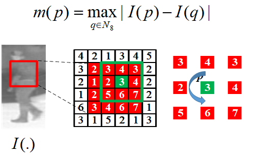

Brief Description: HLID short for histogram of local intensity difference is a kind of texture features and espcially used for FIR pedestrian detection. Instead of using gradients (like HOG) or binary thresholding (like LBP), HLID computes the intensity difference between a pixel and its neighbors. These differences are then encoded and accumulated into a histogram, which represents local texture information.
